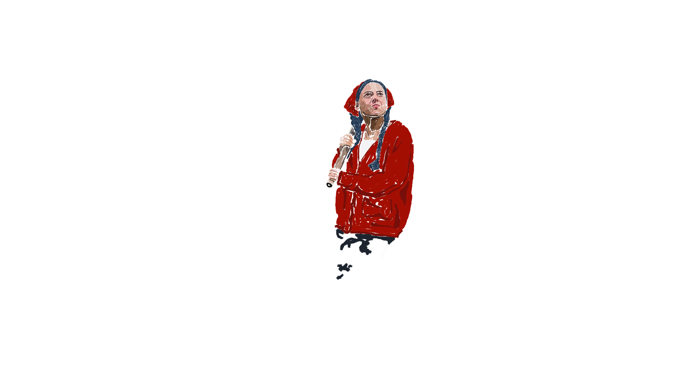

FUEGO
14 AÑOS
Una juventud marcada por decisiones impuestas.
Una película de Pictoris Studio
¿Qué queda de una vida cuando nunca pudiste elegirla?
01 / 06
02 / LA HISTORIA
Tres edades de María, tres capítulos de una misma película.
FUEGO
14 AÑOS
Una juventud marcada por decisiones impuestas.

TIERRA
34 AÑOS
El trabajo rural, la pérdida y los deseos desplazados.

AIRE
76 AÑOS
La memoria de aquello que nunca desapareció.
El pasado no queda atrás. Permanece en María.
03 / DESARROLLO VISUAL
Del registro de movimiento a una animación con identidad pictórica.
Movimiento registrado.
Interpretación del movimiento.
Pinceles y paletas desarrollados.
Integración visual del plano.
Tres tratamientos gráficos desarrollados y aprobados durante la preproducción.
04 / PRODUCCIÓN DE ANIMACIÓN
Cada plano se planifica según su complejidad, no solamente por su duración.
Movimiento expresivo.
Personaje y entorno.
Gestos, memoria y composición.
Paquetes de planos definidos por duración, movimiento y complejidad.
05 / EQUIPO Y PRODUCCIÓN
Dirección creativa, coordinación de animación y seguimiento de entregables.
DIRECCIÓN
Narrativa y aprobación artística.
PRODUCCIÓN DE ANIMACIÓN
Organización de paquetes, coordinación y seguimiento.
PRODUCCIÓN GENERAL / COPRODUCCIÓN
Gestión administrativa y contractual.
DIRECCIÓN DE ANIMACIÓN
Supervisión artística y técnica de la animación.
EQUIPO DE ANIMACIÓN
Ejecución de planos mediante paquetes de trabajo.
Cada plano cuenta con una ruta de coordinación, revisión y aprobación.
06 / PRESUPUESTO Y FINANCIACIÓN
Financiación solicitada, recursos disponibles y desarrollo realizado.
ESTÍMULO SOLICITADO AL FDC
$60.000.000 COP
Solicitud en evaluación.
APORTE PROPIO DISPONIBLE
$10.000.000 COP
Recursos de Pictoris Studio destinados al proyecto.
INVERSIÓN YA REALIZADA
≈ $14.000.000 COP
Desarrollo artístico, técnico y pruebas de preproducción.
El estímulo financiaría la producción pendiente; la inversión histórica no representa efectivo disponible.
07 / CRONOGRAMA Y CIRCULACIÓN
Producción por capítulos, etapas superpuestas y cierre técnico.
La producción se organiza por etapas y entregables verificables.
08 / CIERRE
Una vida atravesada por decisiones que nunca pudo tomar.